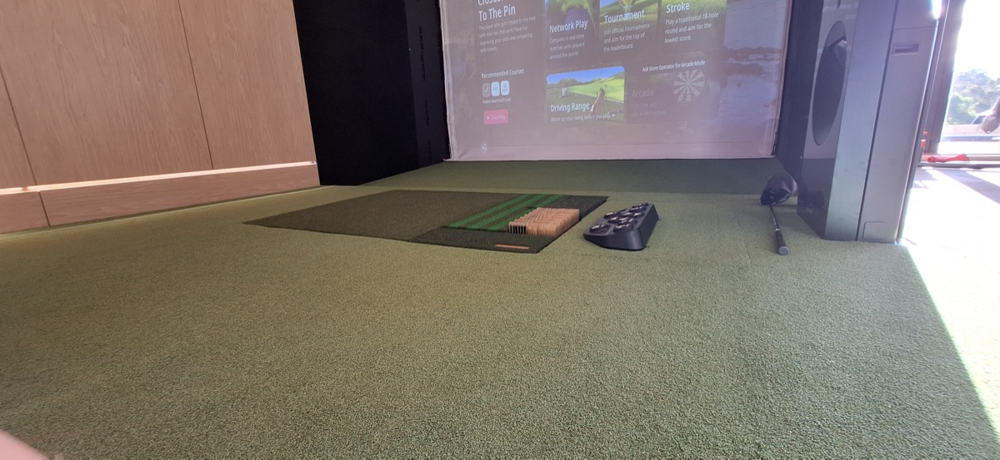
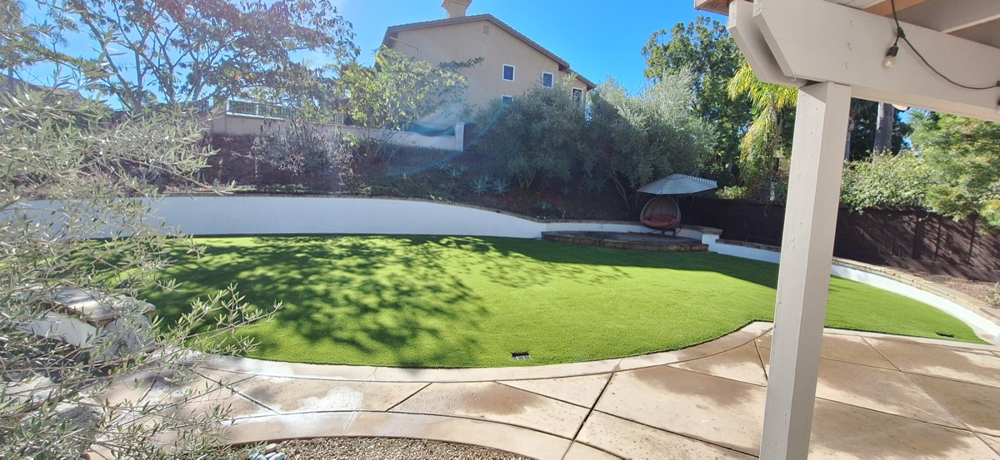

Professional-grade backyard putting greens designed and installed by North County's trusted turf experts.

There is nothing quite like stepping into your backyard and rolling a few putts before dinner. At Tri-City Synthetic Turf, we design and build custom putting greens that deliver a realistic playing experience right at home. Whether you are a serious golfer looking to sharpen your short game or you just want a fun feature for your backyard, we build greens that look and play like the real thing.
Every putting green we install starts with a detailed design consultation. We work with you to determine the shape, size, and layout that fits your space and your goals. Want multiple holes? A chipping area off to the side? Fringe turf around the edges for a true course feel? We can do all of that. Our design process accounts for your yard's existing grade, available square footage, and how you plan to use the green.
The turf we use for putting greens is not the same product that goes on a lawn. We install professional-grade nylon putting turf with a tight, low pile height that provides consistent ball roll and accurate speed. This is the same type of surface used at high-end golf facilities and training centers. The difference between a quality putting green and a cheap one comes down to the turf product and the contouring work underneath it.
Contouring is where the artistry happens. We shape the subbase to create gentle breaks, slopes, and undulations that make every putt a challenge. Flat greens get boring fast. Our team sculpts the terrain so you get a practice surface that actually improves your game. We compact and fine-tune the base until the contours are exactly right, then test ball roll across the entire surface before finishing.
For homeowners across Vista, Oceanside, Carlsbad, Encinitas, and the rest of North County San Diego, a custom putting green is one of the best outdoor upgrades you can make. It adds real value to your property, gives you a reason to spend time outside, and requires almost no maintenance. No mowing, no watering, no reseeding. Just grab a putter and play.
We also install putting greens for commercial properties, offices, and community spaces. If you have an idea for a putting green project, we can make it happen. Call (760) 681-3517 to schedule a free design consultation and get a no-obligation estimate.
Professional-grade nylon turf delivers consistent speed and accurate ball roll comparable to a well-maintained course green.
We sculpt realistic breaks, slopes, and undulations into the subbase so every putt is a genuine practice opportunity.
No mowing, watering, or fertilizing. An occasional brush and rinse is all it takes to keep your green in top condition.
Practice your short game any day of the year, rain or shine. No tee times, no green fees, no waiting.
A custom putting green is a premium backyard feature that increases home value and makes your property stand out.
We use the same turf products and installation techniques found at professional golf practice facilities and country clubs.
From initial concept to final putt, here is how we build your green.
We visit your property, discuss your vision, and design a putting green layout that fits your space. You choose the shape, number of holes, and features like chipping areas or fringe turf.
We excavate and sculpt the subbase to create realistic contours, breaks, and slopes. The base is compacted and fine-tuned until every surface detail is exactly right.
Professional-grade nylon putting turf is laid, cut to shape, and secured. Seams are invisible. We install cups, flags, and any additional features you selected.
We test ball roll across the entire green, checking speed and break accuracy. Any adjustments are made on the spot so you get a surface that plays true from day one.
Custom putting greens typically range from $15 to $25 per square foot depending on size, contouring complexity, and turf grade. A standard backyard putting green of 200 to 400 square feet usually falls between $4,000 and $10,000 installed. We provide free on-site estimates.
We can build putting greens as small as 100 square feet, though most homeowners find that 200 to 500 square feet provides the best practice experience. We design around your available space and can incorporate chipping areas and fringe turf to maximize the playing area.
Yes. We use professional-grade nylon putting turf that provides consistent, true ball roll comparable to a well-maintained course green. Proper contouring and base work are key to realistic play, and that is where our 13+ years of experience makes the difference.
Maintenance is minimal. Brush the surface occasionally to keep fibers upright, rinse with water to remove dust or debris, and remove any leaves. There is no mowing, watering, or fertilizing. Most homeowners spend less than 10 minutes per month on upkeep.